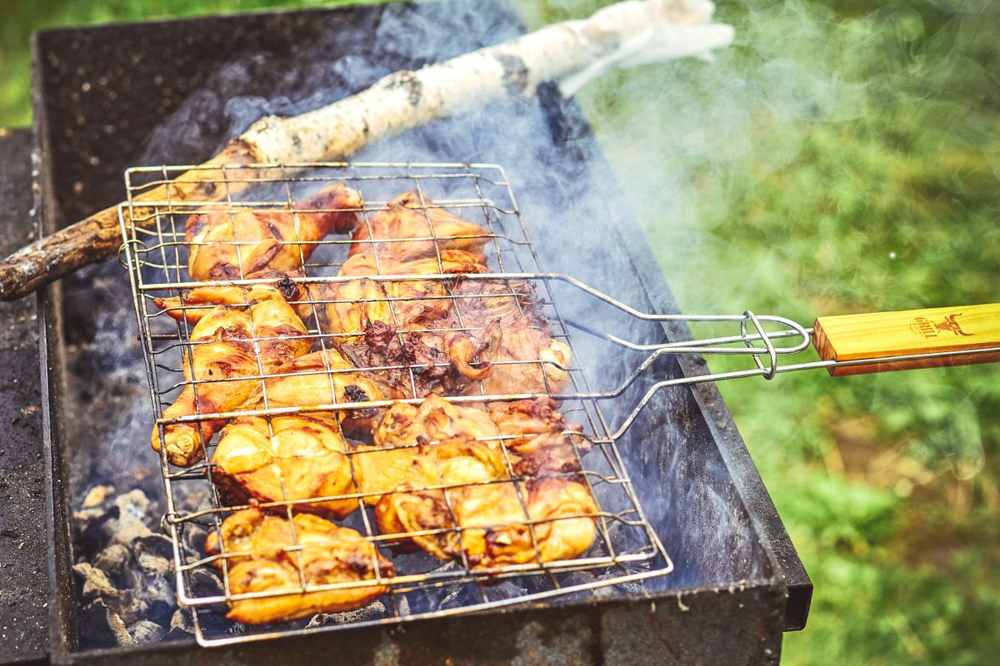
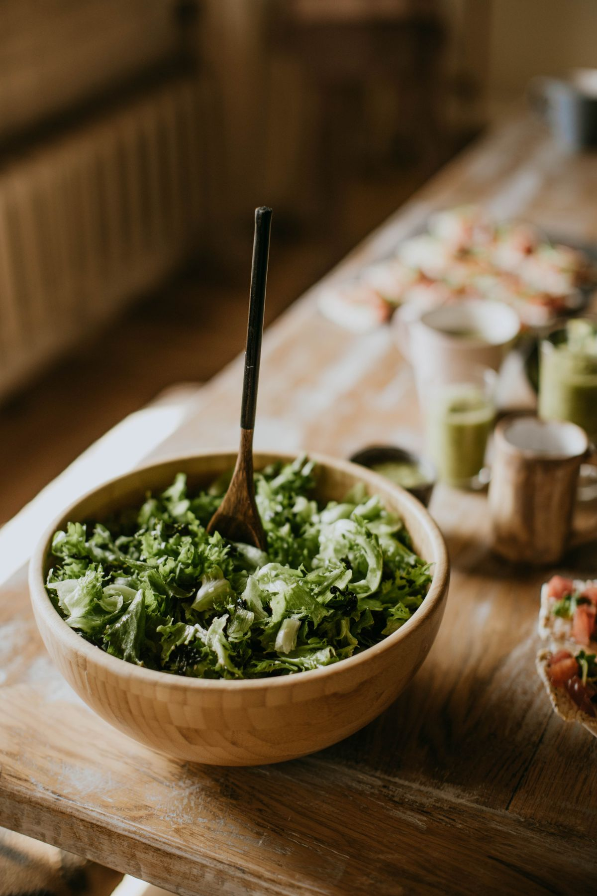
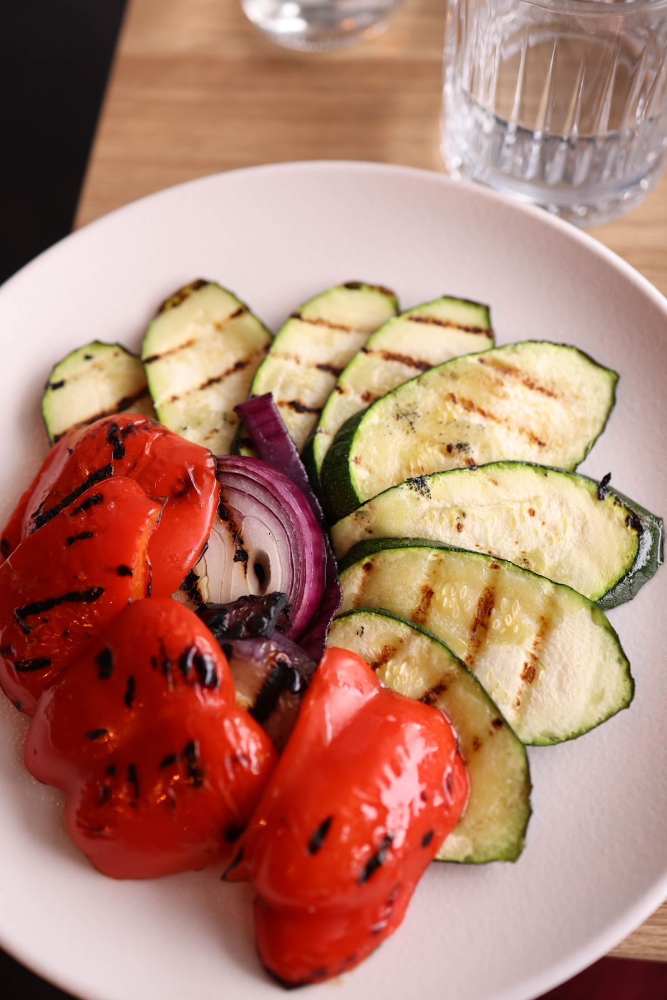
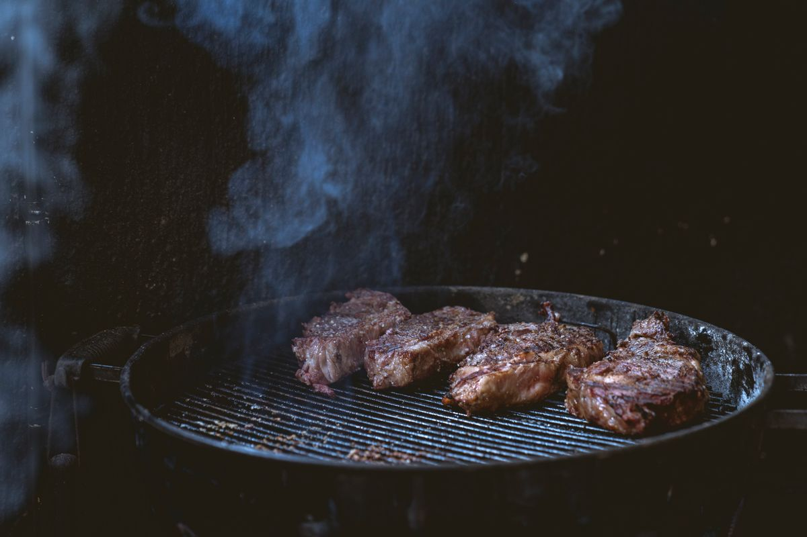
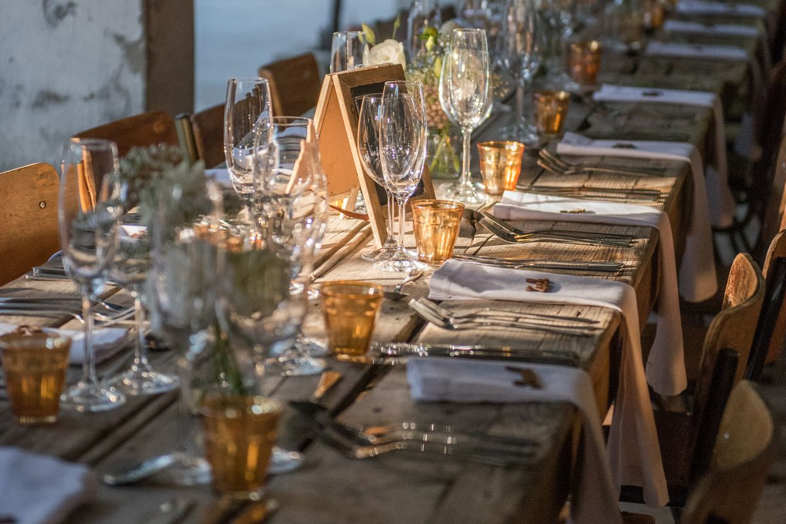
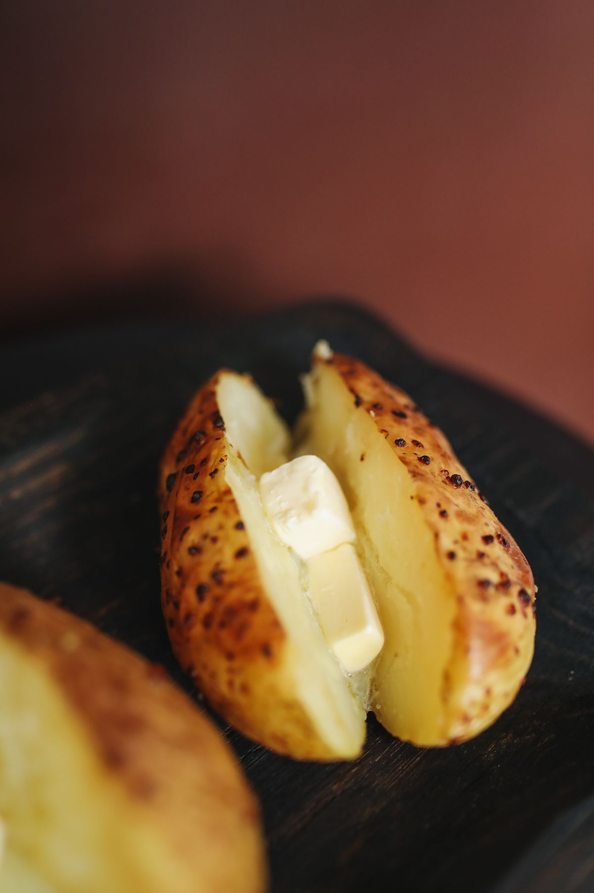
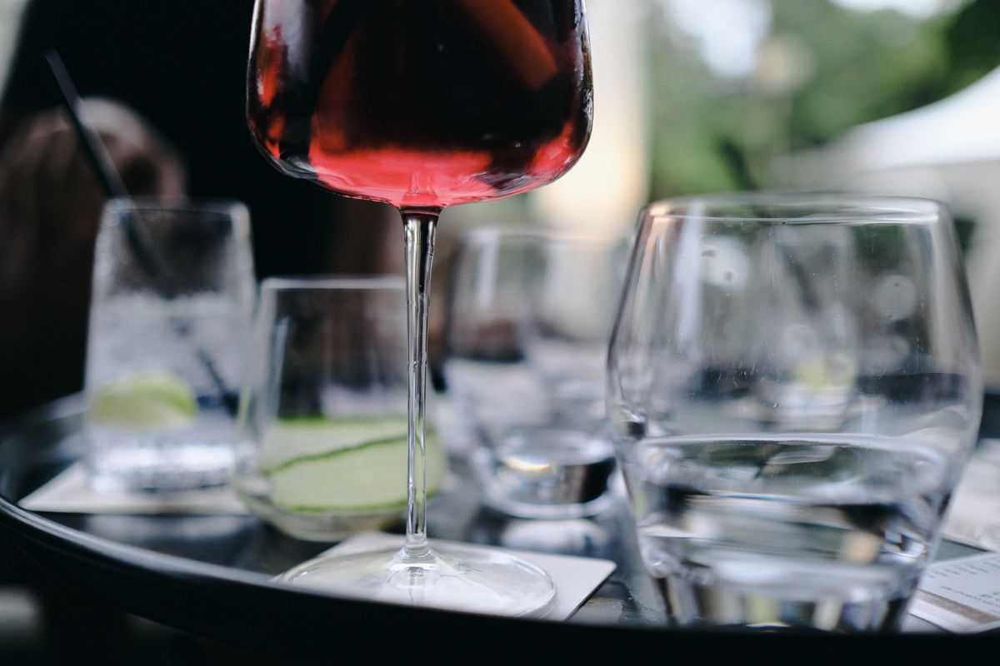
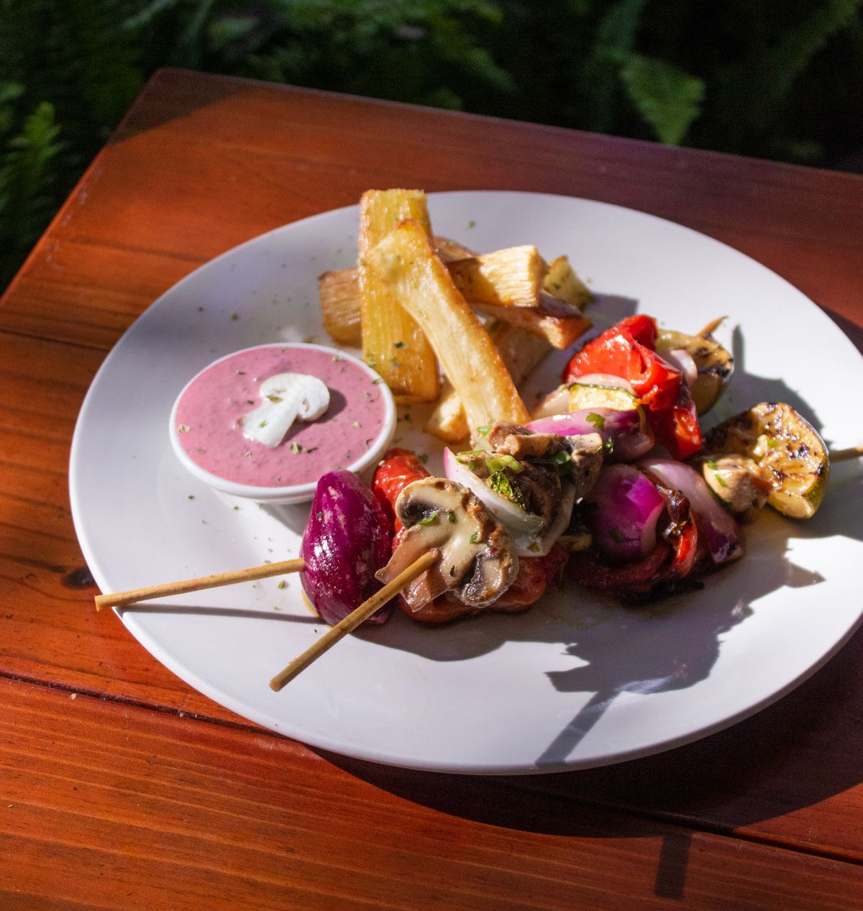

„Wer gerne gute Steaks bzw. generell Grillfleisch mag, ist hier an der richtigen Adresse. Eine übersichtliche Karte, auf der aber für jeden Geschmack etwas geboten ist. Die Steaks sind besonders toll und immer auf den Punkt. Zusammen mit einer Ofenkartoffel oder Pommes und den genialen Grillsaucen ein kulinarisches Erlebnis. Im Sommer kann man im schönen Garten sitzen, dann ist das Grillfeeling auch perfekt."
Steakhaus in Achern-Önsbach
Grillstube Rose –
Grillstube Rose –
In der Grillstube Rose dreht sich seit vielen Jahren alles um eines: perfekt gegrillte Steaks, ehrliche Portionen und ein gemütliches Beisammensein – mitten in Önsbach bei Achern.
Was uns ausmacht
Unsere Küche
Ehrliche Grillküche mit bester Fleischqualität, hausgemachten Soßen und einer großen Beilagenauswahl – für jeden Geschmack ist etwas dabei.
Steaks
Steaks – das Herzstück unserer Küche
Bestes Fleisch, auf den Punkt gegrillt: Unsere Steaks sind seit Jahren der Grund, warum Gäste aus der ganzen Ortenau zu uns kommen. Dazu servieren wir drei hausgemachte Grillsoßen und frisches Brot.
Tisch reservieren
Grillspezialitäten
Grillspezialitäten – vom Hähnchen bis zum Schnitzel
Saftig gegrilltes Hähnchen, herzhafte Schnitzel-Variationen und weitere Klassiker vom Grill – deftig, unkompliziert und mit Liebe zubereitet.
Tisch reservieren
Salate & Vorspeisen
Salate & Vorspeisen – frisch zubereitet
Ob als Beilage oder kleiner Hunger zwischendurch: Unsere frischen Salate und Vorspeisen runden jedes Essen bei uns ab.
Tisch reservieren
Vegetarische Gerichte
Vegetarische Gerichte – auch ohne Fleisch ein Genuss
Auch ohne Fleisch muss bei uns niemand auf Genuss verzichten: Gegrilltes Gemüse und vegetarische Alternativen stehen ebenso auf unserer Karte.
Tisch reservierenDie aktuelle Speisekarte mit allen Gerichten erhalten Sie bei uns im Restaurant oder telefonisch unter 07841 3316.
Ein Blick in unsere Küche
Impressionen
Steaks vom Grill, gemütliche Atmosphäre und unser Garten für laue Sommerabende.





Wer wir sind
Über uns
Unsere Geschichte
Tradition, die man schmeckt
Die Grillstube Rose ist in Achern-Önsbach seit vielen Jahren ein Begriff für Steak- und Grillliebhaber aus der ganzen Region. Was uns auszeichnet, ist einfach erklärt: bestes Fleisch, ehrliches Handwerk am Grill und ein Service, der sich Zeit für seine Gäste nimmt.
An warmen Abenden können Sie bei uns auch im Garten sitzen – reservieren Sie sich Ihren Platz gerne vorab telefonisch mit. Ob großer Hunger oder kleiner Snack zwischendurch: Bei uns wird jeder satt und zufrieden.
- Mittwoch bis Sonntag ab 18:00 Uhr geöffnet
- Reservierung auch für unseren Garten möglich
- Telefonische Reservierung unter 07841 3316
Die Menschen hinter dem Grill
Unser Team
Ansprechpartner folgt
Ansprechpartner folgt
Ansprechpartner folgt
Was unsere Gäste sagen
Bewertungen
Drei echte Rückmeldungen unserer Gäste von golocal.
„Die Grillstube Rose gilt seit Jahren als die Anlaufstelle für Steakliebhaber. Die Steaks sind superlecker und dazu werden feine Soßen kredenzt. Das Essen ist generell sehr gut. Der Service ist freundlich und die Preise für das Essen angemessen."
„Was will man mehr – ordentliche Portionen für gutes Geld. Gegrilltes vom Feinsten. Daumen hoch für den Service!"
Nehmen Sie Kontakt auf
Wir freuen uns auf Ihren Besuch
Adresse
Grillstube RoseMösbacher Straße 1
77855 Achern-Önsbach
Telefon & Reservierung
Öffnungszeiten
- Mi – So
- ab 18:00 Uhr
- Mo & Di
- Ruhetag